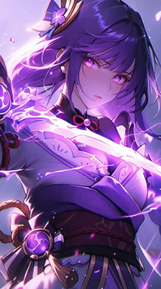

Birthday: 26 de Junio
Elemento: Electro
Arma: Lanza
Región: Inazuma
La Raiden Shogun es la líder suprema de Inazuma, una figura imponente que gobierna con determinación y un ideal inquebrantable: la Eternidad. Aunque muchos la ven como una deidad distante, detrás de su apariencia fría se encuentra Ei, una archon que ha sufrido pérdidas profundas y que busca proteger su nación del paso del tiempo.
「Solo en la quietud absoluta puede encontrarse la verdadera Eternidad. El mundo cambia, las personas cambian… pero mi voluntad permanecerá inalterable.」 — Reflexión de Ei mientras contempla el relámpago sobre Inazuma.